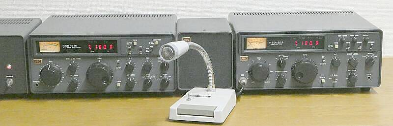
受信機 ＮＲＤ-５１５、ＮＢＤ-５１５と並べて見ました
先輩の、ＮＳＤ-５０５とは異なり。電源装置は単独の製品です（外部スピーカー内蔵型ではない）
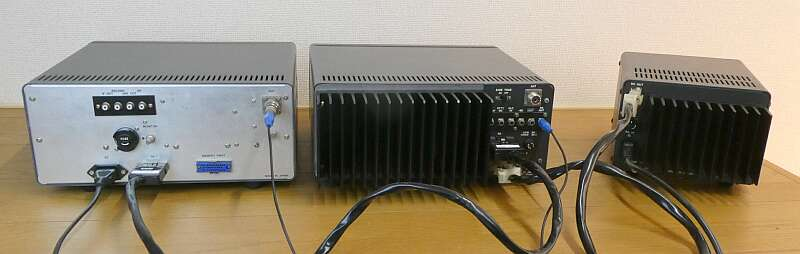
送受信期間の接続は、最低この2本 トランシーブケーブルとアンテナケーブル |
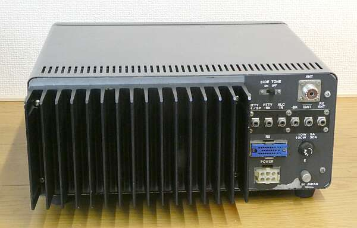 |
リア・パネルです
受信機 ＮＲＤ-５１５との接続は、角型コネクタケーブル1本とアンテナ接続ケーブルのみ |
|
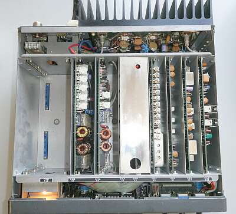 |
ＪＲＣお得意のマザーボードに基板を立てるスタイルです
本気調整には、エクステンション・ボードが必要という、少々厄介な構造です
左端のスペースは、プリセット型アンテナ・カプラＣＦＧ-５１５（オプション）の指定席です |
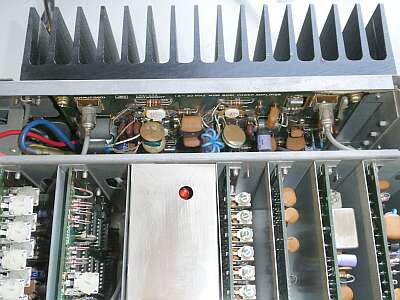 |
ファイナルユニット部のアップ
特にシールドなどは用意されていませんが、ヒートシンクは一般に思うより大型のものが採用されています（強制空冷なし） |
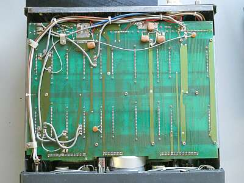 |
シャーシ底面をフロント側から
一枚基板…マザーボードです
|
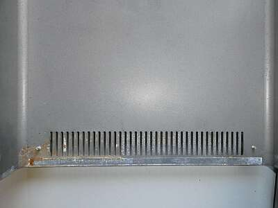 |
下側ケース リア側
水侵入？ 錆びています
基板にも錆びた水が流れたような跡があります
結露かな？
他の保存状況の良くないＪＲＣトランシーバでも、似たような状況を経験したことがありました
フロント・パネルはダイキャスト製ですが、受信機 ＮＲＤ-５１５、ＮＳＤ-５０５とは異なり、ケース・シャーシは鉄製です |
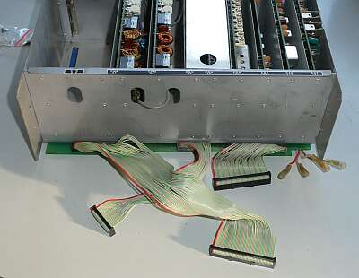 |
フロント・パネルを取り外して、ロータリー・エンコーダー・ユニットを取り出しての修理です
ご覧のように、フロント・パネルは、難なく？綺麗に取り外せます |
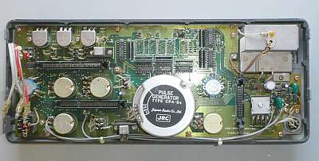 |
取り外したフロン・トパネルの裏面
右上はメーター
中央の円形に見えるのは、今回問題を起こしているロータリー・エンコーダー・ユニットです |
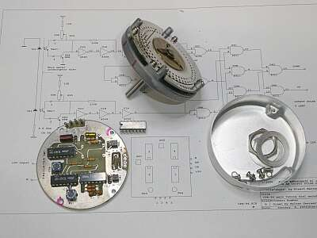 |
取り外したロータリー・エンコーダー・ユニットを分解
結構大変な作業です！
単独で動作をさせて、不良IC（４０４９）を発見
そのICを取り外して写しました
回転するスリットを挟んで基板２枚の構成
この２枚をつなぐ配線の取り外しには要注意
下手をすると（力技で取り組むと）基板パターンを切ってしまいます（滅多に分解される方はなさそうですが） |
次に見つけた不良個所のひとつは、フォトダイオードそのもの（片側）
使用してあるものの型式が分かりませんし、現在入手できるものも限定的です
昨今、フォトダイオードそのものを目にすることも無くなりました
さんざん探して2種類入手しましたが、使えそうなのはTPS606・・・テスターとデスクライトを使って、事前テストの結果です |
TPS606を使って、元の回路で実験したところ思うように動作しません
そこで目的の動作をするよう回路を変更しました
左がオリジナル回路で、右が今回改造後の回路です
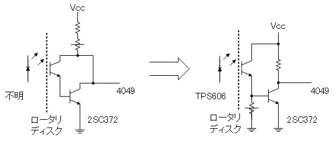
４０４９以外にも2つのIC動作が変！入れ替えてもどうもおかしい
結局、ICソケットを採用して簡単にIC交換ができるようにしました
というのも長期保存していたCMOS-ICに、動作不良品があったようです |
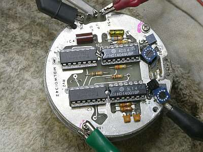 |
改造後、最終動作チェック中の様子です
この形でトラブル対応終了です
エンコーダ本体の高さが高くなる（ケースに収まらない）心配があったのですが、ここはＩＣソケットの採用です
約５ｍｍ高くなり、スペーサを用意してφ２．６長尺のビスを用意して、何とか格好にはなりました（アルミカバーの取り付けは出来ました）
|
まず、ICには惑わされました
交換により、どこかが治ればどこかの動作が変、どうも長期保管品に生じる劣化があったようです（初期のＣＭＯＳです）
最初テスターひとつでＨ／Ｌをチェックしながらの作業を行ったのですが、処理途中から動作をしていないような状況にしかならないことが分かり、正常なＮＲＤ-５１５のロータリーエンコーダの動作を確認することにしました
改めてテスターでは判断できないことが判明、ここでやっとシンクロスコープの登場となりました
何もかもテスターひとつで解決しようとする、年寄りの性（さが）です、オソマツ！
最初からこうしておけば良かったと反省しかりです（途中で投げ出したくなるくらい時間がかかった、いや半分投げ出したのでここまで時間がかかったというのが実体！） |
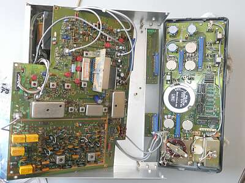 |
余談ながら参考にしようとしたＮＲＤ-５１５のフロントパネルの取り外しにはこれまた労力がかかりました
本機のように簡単ではありません
メイン基板を外して、その下にあるフロントパネルを支える3本のスペーサを止めるビスを外さないと目的が達成できないことが分かりました
このことが分かるまでに結構時間を要しました
折角の分解ですから、この際ＢＡＮＤｰＳＷの接点を念入りに掃除しました |
|
|
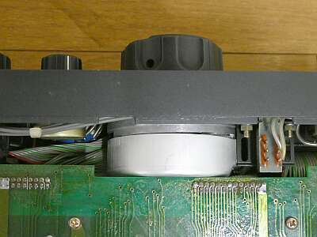 |
ロータリー・エンコーダユニットが、今回の修理で約５ｍｍ高く（奥行が長く）なりましたが、ご覧のように基板との隙間にギリギリ収まっています（正直、無理やり！）
本来は、銀色のダイキャスト部がアルミカバーで隠れてしまいます（カバーはスペーサで浮かせて固定している） |
|
今回は、ロータリーエンコーダの修復にずいぶんと手間取りました
パワー低下の見られるバンド対応は、元気が残っていません、力尽きています！
様子からしてＢＰＦの離調のように見受けられますが、基板を持ち上げるエクステンション・ボードがないと、手が付けられません
ＪＳＴ-１３５用には、たまたまＨＩＲＯＳＥのコネクタがあったので自作できましたが、今回はそうはいきません・・・ |
|
本機のWARC対応
この大変な取り組みをなさったのは、サンノゼ在住の、ＡＫ６ＡＢ 藤井ＯＭです
クリスタルの特注はもちろん、ＢＰＦ基板（３枚必要）まで起こして対応をなさったそうで、その資料をご提供いただきました
お許しをいただきましたのでリンクします
藤井OMですが、ＪＡＮＥＴ（毎週日曜の朝 ２１.３７０ＭＨｚ）に、ご参加だそうです |